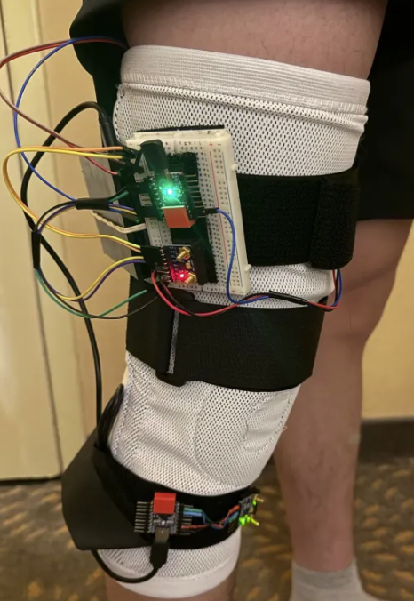
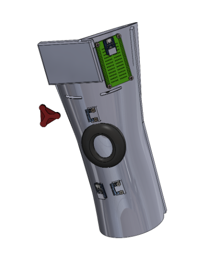
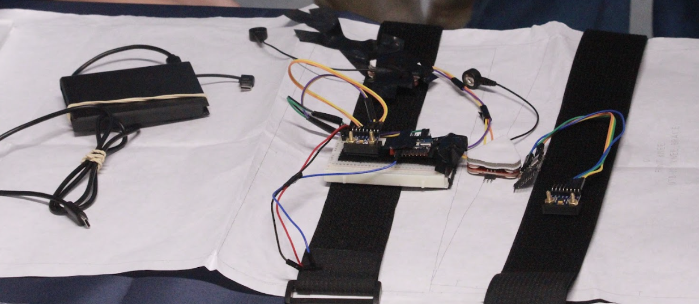

CompetitionTrue North Biomedical Design Competition
RoleMechanical & User Design Lead
Tags
Material SelectionCADANSYSIntegrative Design
Overview
The True North Biomedical Design Competition challenged teams to design and prototype a smart rehabilitation knee sleeve to aid physiotherapists in tracking muscle growth and development in ACL-injured patients. I was part of the Mechanical Design and User Experience (MDUX) subteam, responsible for the mechanical and material properties of the sleeve. As the Mechanical & User Design Lead, I was responsible for integration with other subsystems, the mechanics and materials of the knee sleeve, and virtual modelling and simulation.
Quantiflex's Design
The knee sleeve features a triple layered knit with two outside layers of isotropic spandex, and one interior layer of orthotropic Nylon 6-6 for directional elasticity. Furthermore, a neoprene patella support was added for addtional comfort and support. These materials and stitching patterns were determined through Ansys Granta Edupack software, literature, and market benchmarking.
To capture muscle activation and knee flextion, Inertial Measurement Units (IMUs) were placed on the quad and shin to measure knee flextion and surface Electromyography Sensros (sEMGs) were placed on the vastus medialus and biceps femoris respectively. These IMUs and sEMGs are connected via wire and protobard to an ESP32 microcontroller where data is hosted over Wifi to the Quantiflex website.
To ensure user comfort, the team performed research on suitable compression pressures the knee sleeve should provide and used Ansys Mechanical to validate these values.



Iterations
Iteration 1: The team initially wanted to do a single layer fabric of neoprene foam with a 3D printed TPU patella support; but we found that the triple layer mesh and neoprene foam ring better suits a wider range of users and provides better adjustbility and support.
Iteration 2: The team initially used a conductive material to host the sEMGs for easier application and use; however, we found that sEMG readings were not very accurate nor precise, so team decided to add slits to the knee sleeve in which the sEMGs would slot in and directly contact the desired muscle.
Iteration 3: The team initially used no grounding node as for easy application and knee sleeve fit; however, sEMG readings were very sporatic and inconsistent. As a result, we added grounding electrodes on the patella and femur bones, respectively, and we achieve stable, consistend readings.
Video
Key Takeaways
This project introduced me to engineering simulation tools such as Ansys Mechanical and further solidified my 3D CAD and R&D skills.It also highlifghted the importance of designing with consideration to other subsystems such as the Electronics and Sensor Subsystem, so as to ensure a seamless prototype assembly. Finally, this experience emphasized the importance of a human-centered design whilst also maintaining a balance of ergonomics and functionality.